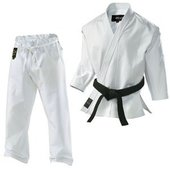

KARATE UNIFORM...
When you first start taking Seidokan Karate classes, you won't need to wear a uniform on day one. We recommend that new students wear track pants and a t-shirt, or something similar that you’ll be comfortable stretching, kicking and exercising in.
After taking a week or two of classes, you will be expected to dress-out in the standard training uniform, also called a "gi." The Seidokan Karate training gi is all white with an obi (belt) colored to indicate your rank. You will get hot and sweaty while training, so we recommend that students wear a lightwight gi as opposed to a heavier, reinforced Judo or Aikido-style gi.
Belt progression goes as follows:
10 - 9 Kyu: white
8 - 7 Kyu : yellow
6 - 4 Kyu : green
3 - 1 Kyu: brown
1st Dan - Black
KARATE WEAPONS & EQUIPMENT...

Unlike sports Karate systems, we do not require a lot of training aids, sparring gear or other expensive equipment.
Because we are a traditional system, we will be doing some weapon training - Kobudo - in this class. Although the dojo has many practice weapons available for new students, you will want to buy your own to practice with at home.
The weapons we use are:
Bo: A hardwood staff measuring approximately 72-inches long.
Sai: Three-pronged metal truncheons with wrapped handles.
Tonfa: Paired wooden "L-shaped" nightsticks
Kama: Paired batons with steel blades similar to a sickle
We will only work on one weapon at a time. Do not feel that you must go out and buy all these weapons when you buy your uniform.